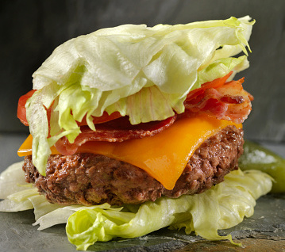

Lettuce Burger

Description
This bacon cheeseburger lettuce wrap is designed to help you get your burger fix in keto. Inspired by In-n-out's protein style burgers.
Ingredients:
- 1/4-1/3 pound Burger patties
- 2 slices Bacon
- 4-6 leaves Iceberg or butter lettuce
- 1 slice Tomato
- 1 slice White onion
- 1 slice Cheese
- 1/2 tsp Pink himalayan salt
- 1/4 cup grated Pecorino romano
- 1 tsp Worcestershire sauce
- (optional) 1 spear Pickle
Instructions:
- Cut bacon in half. Lather burger patty with Worcestershire sauce and salt.
- Place bacon and burger patty in air fryer at 400F for 12 minutes. After 8 minutes, sprinkle the grated pecorino romano onto the patty.
- Assemble burger and enjoy!
Back to index of Recipes